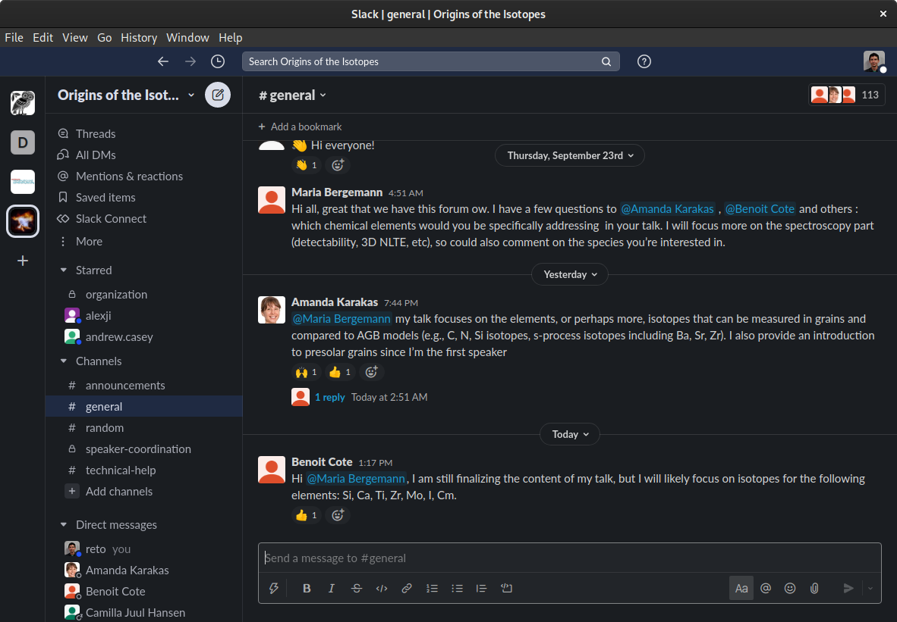
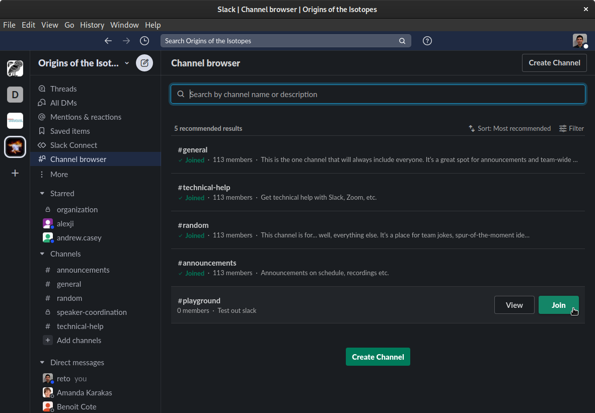
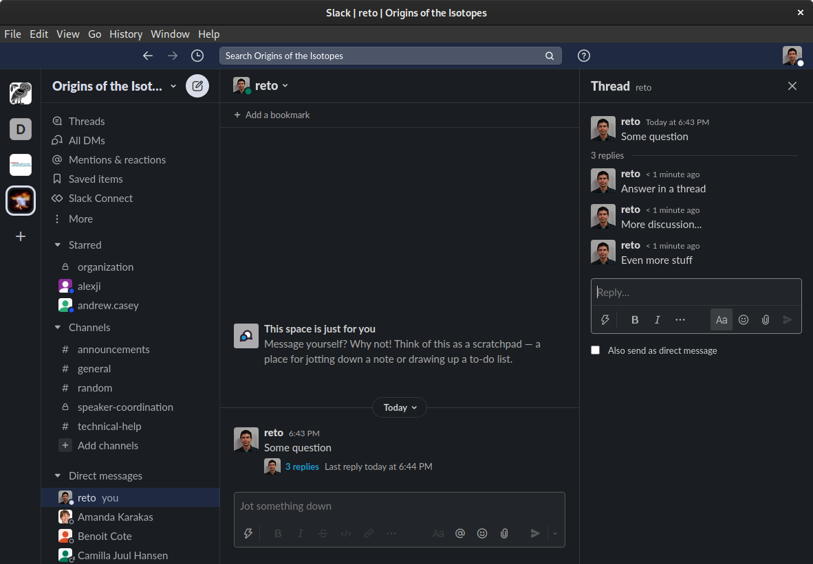
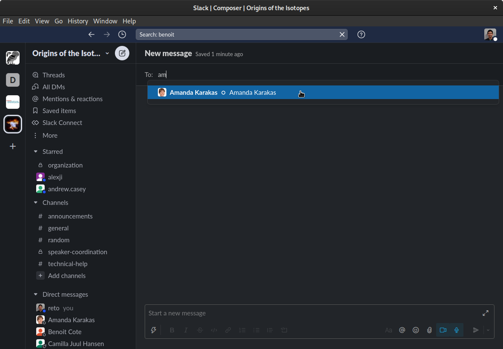
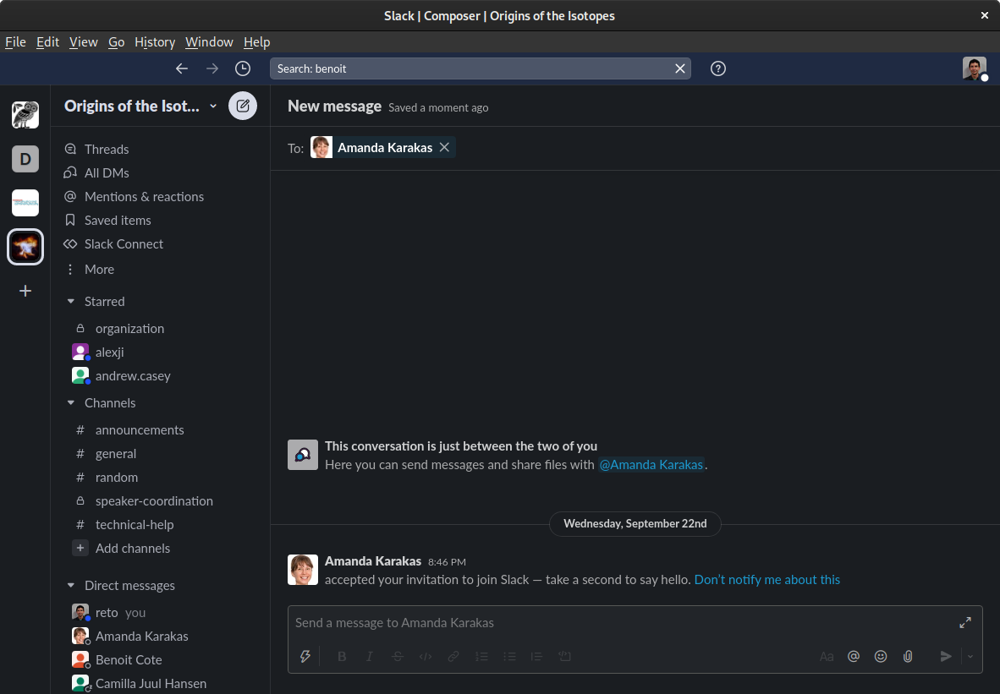

name: inverse layout: true class: center, middle, inverse --- # Welcome to the Workshop on the Origins of the Isotopes <br> Andy Casey, Alex Ji, Reto Trappitsch Sep 28, 2021 & Sep 30, 2021 Sponsored by [IReNA](https://www.irenaweb.org/) <br><br> https://indico.frib.msu.edu/event/49/ --- layout: false # Code of Conduct - Provide an enviroment for everybody that is: - Safe - Harassment- and discrimination-free - Code of Conduct also applies to discussions on slack - Full IReNA Code of Conduct applies (https://www.irenaweb.org/code-of-conduct.html) - We encourage everybody to report violations of this policy to Alex Ji and / or Reto Trappitsch - [alexji@uchicago.edu](mailto:alexji@uchicago.edu) - [reto@brandeis.edu](mailto:reto@brandeis.edu) --- layout: false # Discussions ## Goal of the Workshop **Foster scientific discussion across areas of expertise** - Today and Thursday: Introduction to different topics via talks - Will schedule more discussion sections during the rest of 2021 -- ## Brainstorming document for discussion sections https://docs.google.com/document/d/1A-44urDwh_sQGoevAAjHkJHZNYmJtOGC6yyGQcloqto/edit?usp=sharing --- layout: false .left-column[ ## Slack ### Join ] .right-column[ # To join the slack channel use the following link https://join.slack.com/t/originsoftheisotopes/shared_invite/zt-wd8oqveq-pdAM0qH2KKmI2dRhVr29yQ - if you haven't received or lost the e-mail - if you want to join after all ## An intro to Slack To find an introduction document and more help, follow this link: https://docs.google.com/document/d/1bcLaRXDhx0zS77eZANLajrDmuMv6bqzZ7n0F9z0ru5c/edit ] --- layout: false .left-column[ ## Slack ### Join ### Overview ] .right-column[  ] --- layout: false .left-column[ ## Slack ### Join ### Overview ### Channels ] .right-column[  ] --- layout: false .left-column[ ## Slack ### Join ### Overview ### Channels ### Threads ] .right-column[ <img src="slack3.png" alt="drawing" width="800px"/> ] --- layout: false .left-column[ ## Slack ### Join ### Overview ### Channels ### Threads ] .right-column[  ] --- layout: false .left-column[ ## Slack ### Join ### Overview ### Channels ### Threads ### DMs ] .right-column[  ] --- layout: false .left-column[ ## Slack ### Join ### Overview ### Channels ### Threads ### DMs ] .right-column[  ] --- template: inverse # Acknowledgement